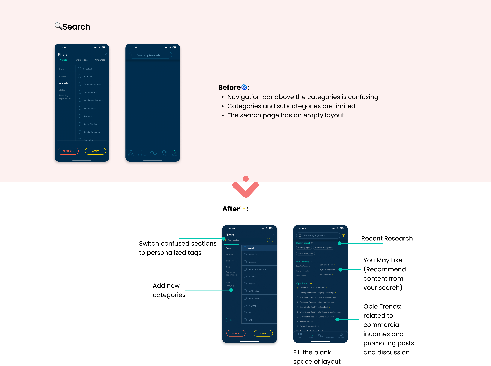
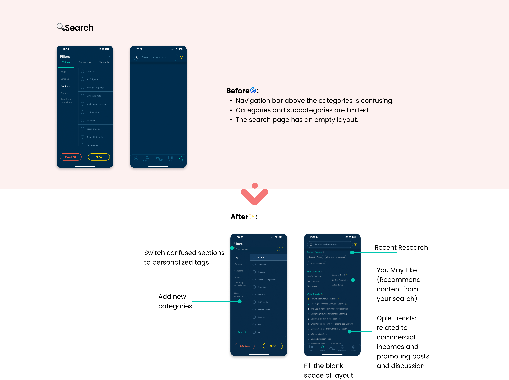

Ople is a peer-to-peer platform where PK-12 educators share best practices, strategies, and lesson ideas through short-form videos. The platform aims to empower teachers to learn from one another, build professional connections, and enhance instructional collaboration.
Our team worked closely with Ople to identify and address user experience challenges in its current app version. Through usability testing, data analysis, and iterative design, we developed actionable insights and redesigned key features to improve the platform’s accessibility and usability.
Client Liaison & UIUX Design
9.2024 - 12.2024 (3 months)
Figma, Google Suite, Notion, Slack, Zoom
How might we enhance Ople’s user experience to foster trust and satisfaction, while inspiring users to actively create and share content?
Redesigning Ople to better align with the user needs by addressing key pain points and improving key features that inspire and streamline content creation and sharing, fostering a more collaborative and engaging knowledge-sharing platform.
To gain deeper insights into users' overall experiences with Ople, we conducted 6 usability tests with participants from various subjects and grade levels, all of whom are regular users of knowledge-sharing platforms.
PK-12 teachers
PK-12 teachers
PK-12 teachers
1. Browse the homepage and save videos for later use.
2. Search for specific topics and refine search results.
3. Watch a video and evaluate its relevance and user experience.
4. Engage with a video and interact with the creator.
5. Share content on on Ople.
6. Explore personal space and organize the content in it.
After gathering insights from usability testing and post-test interviews, we identified recurring patterns and feedback mentioned by users. These were then organized by key features: Discover, Search, Post, and My Ople. These categories represent the core themes that guided our redesign efforts to enhance Ople's user experience.
 



In this project, we focused on understanding the user's journey through the app and identifying ways to enhance their experience. By stepping into the user's perspective, we reevaluated their needs, considered which designs would make them feel more at ease, and pinpointed aspects of the experience that might be less enjoyable—often diverging from our initial expectations.
Through this project, I gained valuable experience in teamwork and client collaboration, with a primary focus on balancing the needs of both users and client. During the redesign phase, I learned to prioritize the core concepts of the product while thoughtfully incorporating multiple features to address user needs effectively.